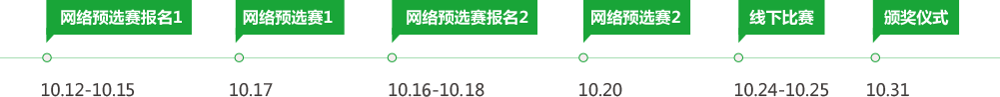

关于迷你编程马拉松 - Mini Code Marathon(MCM)
渣打（中国）科技营运有限公司，作为渣打集团全球金融市场软件开发中心，已于2013年5月在中国成功举办了第一届以“Code to Change—编程美好生活”为主题的编程马拉松大赛。
2014年，为了更长远地培养、遴选、吸纳具有软件开发及金融市场知识的综合性人才，公司特将编程马拉松比赛推广为系列赛事活动，并已于2014年12月至2015年1月圆满举办了第一届Mini Code Marathon (MCM)-迷你编程马拉松赛事，成功吸引了来自全国500余人参与其中，为中国现代化金融市场软件产业培养世界级中坚力量迈出坚实一步。
在本期活动中，我们将以特殊的比赛方式展示对女性程序员这一日渐增多的群体的关注与重视。我们秉承渣打“一心做好，始终如一”（Here for good）的信念，诚招全国各地对金融市场业务以及软件开发感兴趣的计算机、经济、金融等各类编程爱好者和专业人才接受挑战，用自己的实力赢取千元美金大奖并获取加入渣打集团金融市场软件开发中心的机会。
此外，本次比赛首次针对应届高校毕业生设立校园招聘绿色通道，参赛并获得最终奖项的选手将会获邀参加渣打科营中心的Tech Super Day，并跳过校园招聘的初试环节获得终极面试资格；获最终奖项的有工作经验的专业人才也将有机会获得渣打科营中心的面试机会。
参赛群体: 欢迎各高校计算机、金融、经济等专业的编程爱好者以及有一定工作经验的专业人才参赛。
活动举办方: 渣打科营中心
MCM网络预选赛结果公示
感谢大家的参与，Mini Code Marathon第二季的两场网络预选赛均以顺利完成，以下为胜出团队的结果公布。
恭喜以下团队进入决赛（组长姓名公布如下）:
张佶平、鞠富松、陈贝、黎健成、童晓亮、罗继明、王帅、母庆冉、肖路、乔刚、范宇、彭勇、姜鑫磊、朱杰、程伟、李铮、耿渊哲、王晓华、黄曦、吴卓锋、毛洪玥、孙瑶、陈思嘉、周卓茹、王国强、曹玮、张乐纯、石凯凯、何运田、高雅、郭帅、张恒、李超、王鹏、洪煜中、吴先斌、舒茂、刘毅、何畅
恭喜以下团队获得网络预选赛纪念奖(组长姓名公布如下)：
褚瑞、吕博文、沈大为、刘力铮、朱涵、易昌、崔弦毅、常月明、戴蓉、刘晓帆、周韵、王亚军、戴鑫、邱小妹、王丹、胡天翼、杨轶群、王洋、陈烨轩
参加决赛的每位选手都将获得渣打礼包一份，每个团队将获得某电商代金卡一张；
获得网络预选赛纪念奖的每个团队也将获得某电商代金卡一张；
如决赛入选团队无法到场参加，仅赠与预选赛纪念奖。
获奖团队将于近日收到主办方项目经理的电话通知，敬请保持手机畅通。
奖品设置

赛事安排
FAQ
- Q:渣打科营中心是什么企业？
- A:渣打(中国)科技营运有限公司（渣打科营中心) 成立于2007年，作为渣打集团的成员之一,是渣打银行(香港)有限公司拥有的全资子公司。渣打科营中心是渣打集团继印度香奈和马来西亚吉隆坡后设立的全球第三家服务共享中心，专门提供金融后台数据外包服务。
- Q:迷你马拉松编程比赛是什么比赛？
- A:迷你马拉松编程比赛是渣打科营中心面向广大在校学生、社会IT相关工作者开展的系列编程大赛，分为马拉松编程大赛和迷你马拉松编程比赛。第一届迷你马拉松编程比赛已于2014年12月至2015年3月成功举办。本次第二届迷你马拉松编程比赛不仅延续第一届比赛的线上选拔，并首次引入线下比赛，特邀初赛优秀选手在北京、天津及大连三地进行现场比赛，获奖者将获邀亲临渣打科营中心参加Tech Open Day。
- Q:本次迷你马拉松编程比赛的主题及口号是什么？
- A:为了激励更多编程爱好者，尤其是女性编程爱好者的积极参与，本次比赛特别设立“花儿与编程——与她同行，畅享马拉松”的主题口号。此外，本次比赛的参赛试题也会与女性主题相关；并且在现场决赛中设立女性特别编程奖题目。希望所有参赛者能够在比赛中收获更多不一样的快乐与享受！
- Q:如何报名参加本次比赛？报名截止时间是什么时候？
- A:参赛选手可以到本次比赛的官方主页 scbcode.hirede.com了解参赛说明须知后，进行初赛的线上注册报名，即可参加网络预选赛。报名时需一次性填写所有团队成员的信息，题目也需要所有成员共同作答。为避免参赛者时间冲突，网络预选赛分为两场，选手可任选一场答题。第一场网络预选赛报名时间为10月12日-10月15日24:00，比赛时间为10月17日下午。第二场网络预选赛报名时间为10月15日-10月18日24:00，比赛时间为10月20日下午。
- Q:本次比赛的参赛形式是什么？对参赛人员有什么要求？
- A:本次比赛的参赛方式为组队参赛，每队1至3人，至少一名女性参赛者。网络预选赛：报名参赛后选手会通过邮件接到比赛邀请，题目需要在打开邀请链接后两小时内完成。线下比赛：网络预选赛获奖者将与10月24-10月25日受邀参加为期两天的线下比赛，比赛将于北京、天津、大连三地集中举办。本次比赛要求参赛者在报名以及比赛期间未在渣打科营中心工作或实习。
- Q:我不是“程序媛”，而是一名男生编程爱好者，我可否参加比赛？
- A:本次比赛以“花儿与编程-与她同行，畅想马拉松”为主题，对参赛者不限性别。但为了更好地鼓励女性编程爱好者的参与，希望各位程序员拉动身边的“程序媛”们组队参赛，每个团队不超过3人，若单人参赛，则必须为女性。
- Q:可否重复参加两次网络预选赛？
- A:每位参赛选手仅有一次机会报名参加网络预选赛，重复报名的选手会影响整个团队无法参加网络预选赛的答题环节。同时，请各位参赛者填写真实的个人信息，以便线下比赛的身份确认。若提供虚假信息，举办方有权取消团队的比赛资格。
- Q:本次比赛对编程语言有什么要求？
- 本次比赛的所有题目，可以在C/C++/Java/C#编程语言中自由选择。
- Q:本次比赛新设的线下比赛以及Tech Open Day都有什么特色活动？
- A:本次比赛较第一届，特邀初赛获奖选手参加为期两天的线下比赛，比赛将集中在北京、天津、大连三地举办。线下比赛的获奖者将有机会亲临渣打科营中心现场，向公司高层技术主管展示决赛成果。此外还有颁奖仪式、高层主管及优秀员工分享会等活动。
- Q:本次比赛的题型是什么？
- A:网络预选赛为算法题，共4道，需团队共同完成。线下比赛为开放性题目，由团队共同完成，比赛时间约为2天。
- Q:获奖选手有哪些奖励与奖品？如何获取？
- A:网络预选赛获奖者，在经组织方确认报名信息无误之后，会以邮寄形式收到初赛获奖礼品。所有线下比赛参赛团队，均可在10月25日比赛结束后领取奖品。线下比赛的获奖者将于10月31日参加渣打科营中心Tech Open Day的活动，在公司高层技术主管对比赛成果展示进行评定后，将于当日下午举行颁奖仪式。最终奖将以团队为单位发放（女性特别奖除外）：一等奖 - 2000美金（1个）；二等奖 - 1000美金（2个）；三等奖 - 500美金（3个）；女性特别奖 - 800美金（1个）此外，最终获奖者可以进入渣打科营中心2015年校园招聘绿色通道，直接参加终极面试。有工作经验的获奖者也将获得全职工作的面试机会。
- Q:参加线下比赛及Tech Open Day的路费及住宿费是否报销？
- A:活动举办方将根据所在地给予参加Tech Open Day的获奖者一定的差旅及住宿补助（补助以人为单位），将于活动当天发放。